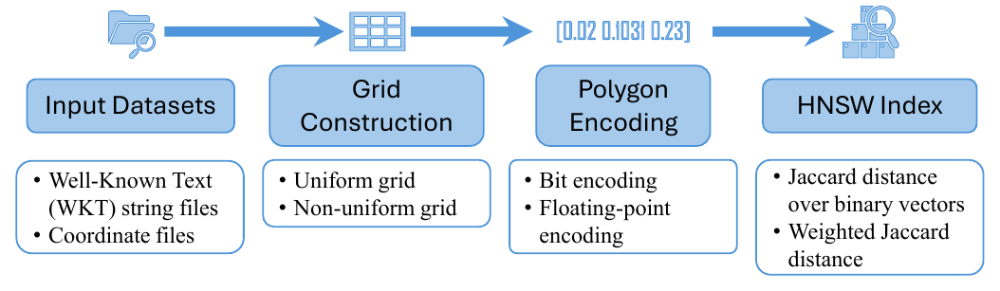
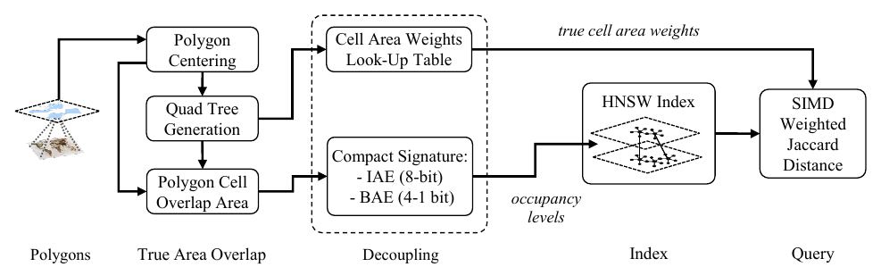

Research
Spatial data is irregular. Parallel hardware is not.
Segment trees, quadtrees, and R-trees were built for one processor and one memory. On GPUs and clusters they lose the properties that made them fast. Real data makes it worse. Degenerate inputs are common, and most parallel codes avoid them by augmenting the input and accepting a slightly wrong answer. I redesign these structures for parallel hardware.
Exact parallel computation on geometry
Polygon clipping computes the intersection of two polygons. It sits under map overlay, CAD, and graphics. Standard algorithms are sequential and quadratic in the number of edges. They also fail on degenerate cases, where a vertex of one polygon lies exactly on an edge of the other. Real GIS data is full of these. The usual fix is to move vertices until the case disappears, whic changes the answer.
I developed the first parallel clipping algorithm that handles every degenerate case without perturbation. In the PRAM model it runs in logarithmic time. For the GPU, I added three cheap geometric filters based on minimum bounding rectangles and intersection counts. They discard 80–99% of candidate edge pairs before any costly intersection test. The CUDA implementation reaches 40× speedup over the sequential baseline on real-world data (CCGrid 2023, best paper finalist).
Next, I attacked the same problem structurally. Segment trees are the classic tool for line-segment queries, but no implementation, CGAL included, supported intersection finding or polygon clipping. At ICPP 2024 I presented the first such extension. It builds on Chazelle’s augmentation, and I parallelized the tree construction with OpenMP. The augmented tree eliminates 99% of non-intersecting edge pairs, against 63% for the best prior filter. That is enough for a single CPU core to beat the state-of-the-art GPU implementation. Offloading the kernels with OpenACC matches the earlier CUDA baseline, and profiling shows a native CUDA version has clear headroom.


How the common MBR (CMBR) filter prunes polygon clipping
Only edges that touch the rectangle shared by both polygons can intersect. The rest are dropped before any exact test. Click a step to hold that frame.
How the line-segment MBR (LSMBR) filter prunes the rest
Each surviving edge gets its own bounding rectangle. Only pairs whose rectangles overlap are tested exactly. Click a step to hold that frame.
Encoding geometry for billion-scale search
How can we answer the following query: find the shapes in this dataset that look like this one. A brute force answer may intersect the query with every candidate in the database and rank them based on theyr Jaccard score. However, approximate nearest-neighbor (ANN) search is the practical alternative, but it needs feature vectors that preserve shape. A uniform grid is unable to preseve the shape properties over a polygonal dataset of exponential area variations. Real polygon collections vary in area by orders of magnitude, so one grid is too coarse for the small shapes and too fine for the large ones.
ShapeToVec encodes each polygon on a quadtree grid that refines only where the boundary passes. That keeps both shape and area across the whole size range. The right similarity measure for shapes is weighted Jaccard, the ratio of intersection area to union area, not Euclidean distance. I implemented it natively inside the HNSW index in NMSLIB. The system reaches 97% recall on top-50 queries over 1.7 million polygons. It is the first system to run shape-based Jaccard search at this scale (IEEE BigData 2025).
Now, recall is not the limit, memory is. ShapeToVec+ (ACM SIGSPATIAL 2026) separates area from the stored signature. The signature keeps only cell occupancy. A small look-up table supplies the true cell areas at query time. This gives 4× compression with 8-bit integers and 8× to 32× with bit encodings, with the metric intact. A product quantizer built for weighted Jaccard (under review) pushes the same line to 1.05 billion polygons on one commodity server.


Why a uniform grid fails
One resolution cannot serve shapes whose areas differ by orders of magnitude. Click a step to hold that frame.
How ShapeToVec encodes it instead
Grid cells refine only where the boundary passes. Cell occupancy becomes the feature vector. Click a step to hold that frame.
Real workloads: ScooterLab
ScooterLab is an NSF-funded testbed built on instrumented e-scooters. Since 2023 I have led its system development. My team built the Research Activities Management Portal (RAMP). It lets outside researchers manage experiments and visualize, filter, and download the fleet’s sensor data. My team is works on micromobility safety research leveraging the multimodal data ScooterLab collects.
The next questions are about metrics other than Jaccard, geometries other than polygons, and when a learned structure should replace a designed one. If you are a student who likes results you can measure, a filter that removes 99% of the work or an index that shrinks 70×, get in touch: buddhiashan [dot] mallikakankanamalage [at] utsa [dot] edu.